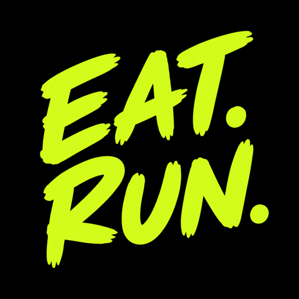

EAT.RUN.
iPhone · iPad
Before your run, see your day in kilometres.
EAT.RUN. subtracts your estimated full-day energy needs from the food you enter, then turns only the surplus into an estimated running distance. A playful way to think about today’s activity.
Download on the App StoreFree · Contains ads
Before you start
At or below estimated daily needs, the result is 0 km. This estimate is not a training prescription or weight-loss promise and does not track completed runs. Food does not need to be paid back through exercise.
Read the guide